All these machines are now pure vintage, but at some point back in time, they were state of the art. It was a magical time for computer owners, every new machine was unexpected, surprising, ahead of the competition, unbelivably powerful and sometimes even crap from day one. Every chip was a small glimpse into the future.
The list below is not complete as I'm not listing extra hardware like floppy drives, monitors, joysticks, software. Some of these computers I own more than one, which I'm not listing as well.
My first computer. A special place in a kid's heart that no other computer can fill. The C16 came out after the very successful C64 and never had a chance on the market due to inferior hardware.
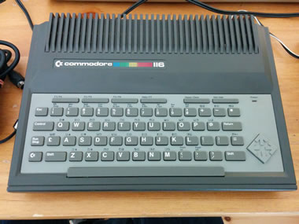The C116 was rare even back it came out. The tiny mainboard and case was supposed to rival the Sinclair ZX Spectrum, but with almost no room inside for modifications, it was too limited.
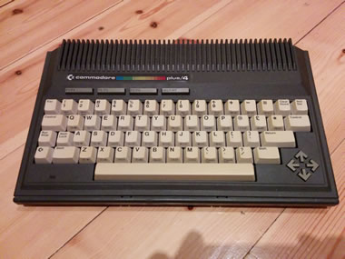The Plus/4 was positioned as the business alternative to the C64, with a great BASIC 3.5, 64k and build in office software it was in a good position, but the 264 series lacked good software support.
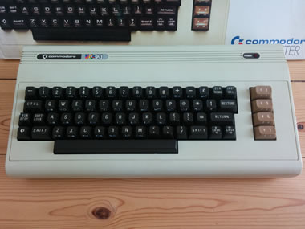In my view the VC-20 is probably the most beautiful looking Commodore computer. The white body with the dark keyboard looks like a design classic. The basic version featured only 3.5KB of RAM.
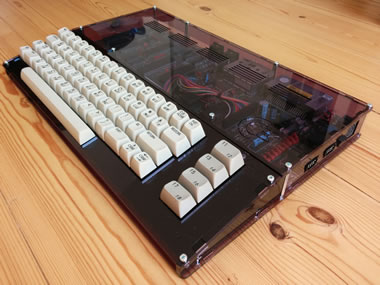A special modified C64 C in a super stylish acrylic case. You can watch the chips working through the transparent top and it has a nice blue light inside. I love this machine.
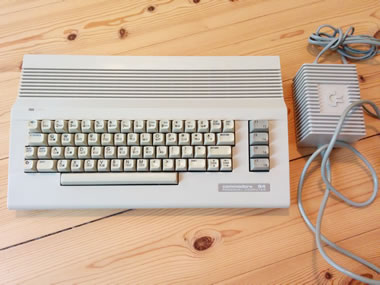The "modern" design of the C64 which came out after the breadbin design. Later on, the C128 and the Amiga would follow that path. I remember I never liked it as a kid.
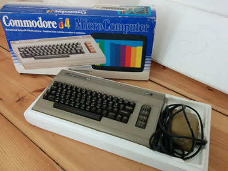The classic breadbin design. I can't remember when I got this one. So many versions of this case exist, with different keycaps, different F-Key colors, different labels etc. etc.
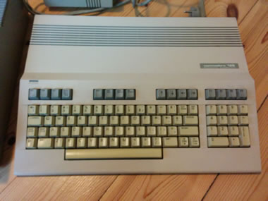The Commodore 128 never was a great success as it was not good enough to compete against the upcoming Amiga and with the C64 included, most people didn't use it for much more than gaming.
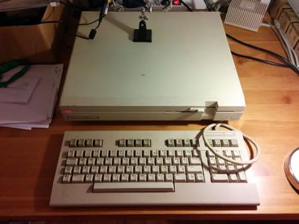This Commodore C128d (in plastic case) was my second computer. BASIC 7.0 was extremely powerful and made it easy for me to code my first little games and demos. All shitty, of course. I own a metal C128d, too.
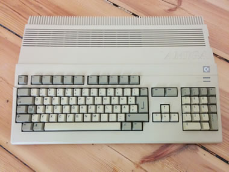Almost everybody and his mom switched from the C64 to the Amiga 500 when it became cheap enough. I somehow never got attracted by it and switched to an Atari STE. Played lots of games with friend on it though.
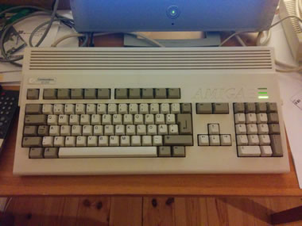The Amiga 1200 is the premium edition and today quite expensive on eBay already. The hard drive is replaced by a CF card and a ACA1221 turbo card speeds up the computer. A perfect retro gaming machine.
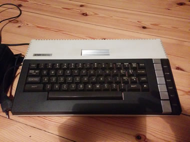An Atari 800 XL in pretty good condition, however, I lack almost any additional hardware for it and haven't been able to give this one a good test drive. It's on my to do list for sure...
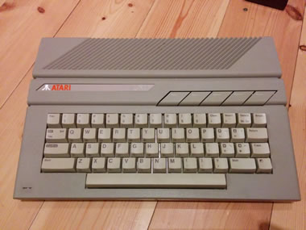I must say I always liked the design of Atari computers. The old ones (like the 800 XL) looked pretty 70s and the design with the skewed function keys looked pretty modern at that time.
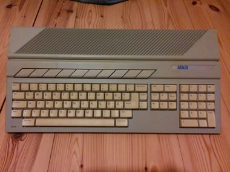Besides turning it on to check if it's still alive I haven't done anything with this 520 STM yet. I have no external drive for it and it's pretty underpowered compared to the 1040 STE.
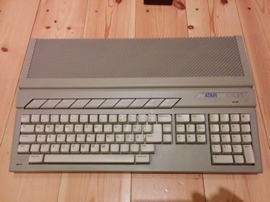Ahh, the wonderful, shiny Atari 1040 STE, the third computer I owned. I remember when it came out and everybody called it the Amiga killer (which it never became) because of the updated graphics capabilities.
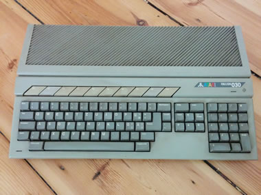The Atari Falcon. Almost as cool as the Millenium Falcon, if not cooler even. The last home computer Atari made before it went bankrupt. A pretty capable machine, but too late to compete against the rising PCs.
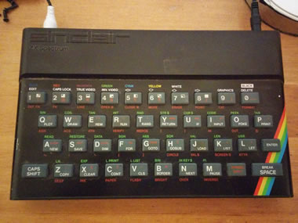To be honest, the only thing I liked about the ZX Spectrum was its cute design. Nobody I knew as a kid had one and the games can't be compared to the C64 really. Still a great vintage computer.
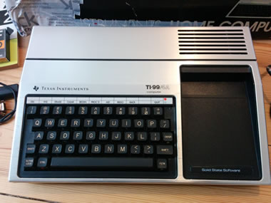Another computer I have never seen in the wild in Germany. With its unique silver design, it is something to look at and I would love to develop something for it when I find the time someday...